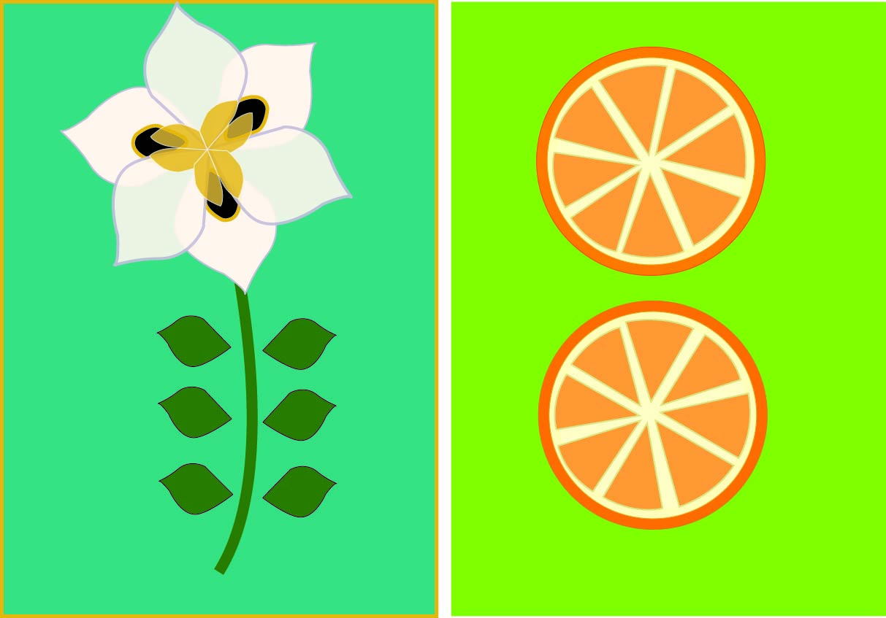

Jerko Artuković
Vježba 3 – Multipliciranje objekata i uzorci

U ovoj vježbi sam koristio alat Pen za crtanje kontura objekata, a zatim sam primijenio
tehnike dupliciranja s tipkom Alt kako bih multiplicirao oblike.
Koristio sam različite boje unutar nove Swatch grupe (barem pet boja),
te primijenio tehnike rotacije, skaliranja, transparencije i izrade uzoraka.
Na kraju sam u pozadini slike primijenio uzorak kao teksturu. Ova vježba mi je pomogla
da bolje razumijem principe vektorske ilustracije i ponavljanja elemenata u dizajnu.